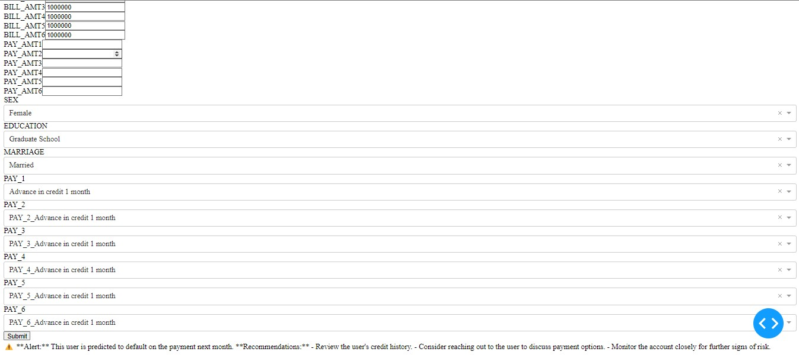
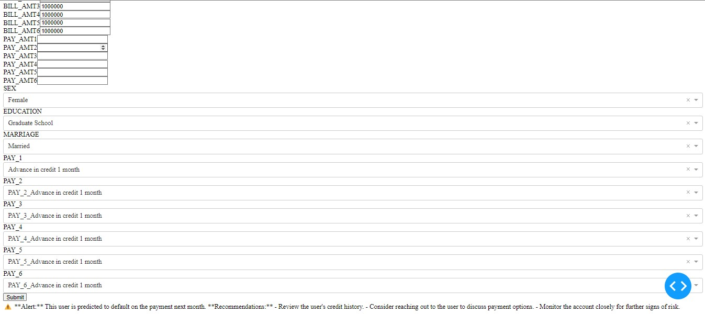

Prediction of Credit Card Default with an interactive dashboard.
 

Tools and Technologies used
- AWS EC2: Used for hosting the Dash application and managing server operations.
- AWS RDS: Employed for storing and retrieving data for analysis.
- Python: Utilized for data cleaning, exploration, and model development.
- Dash: Used for building the interactive dashboard.
- Keras: Employed for building and serializing the neural network model.
Objective
The primary goal of this project is to develop a data analytics product and a predictive tool using neural networks focused on managing risks associated with extending consumer credit. This product aims to provide valuable insights and detailed analysis on factors influencing payment defaults and identify high-risk customers before extending credit.
Business Questions
- What are the main factors that influence customer payment defaults?
- How can we identify customers with a high risk of payment default before extending credit?
Data Source and Structure
The data for this project was sourced from the University of California Irvine repository: Default of Credit Card Clients. The dataset includes 23 explanatory variables such as credit amount, gender, education, marital status, age, past payment history, bill statement amounts, and previous payment amounts.

Data Cleaning and Preparation
The data was carefully loaded and cleaned using Python. Missing values were identified and managed appropriately to ensure the data was ready for analysis. Key steps in data preparation included:
1. The dataset was loaded from an Excel file using the pandas library in Python. The first row of the dataset was used as the column headers.
2. Checked for missing values in each column and handled them appropriately.
3. Removed rows with outliers in the 'EDUCATION' and 'MARRIAGE' columns.
4. Renamed columns for clarity and converted all columns to numeric types.
5. Replaced categorical values with descriptive text and created dummy variables for these categories.
6. Converted categorical variables into dummy variables.
Exploratory Data Analysis
The correlation matrix reveals important relationships among the variables. Specifically, the repayment statuses from April to September show a positive correlation with the likelihood of defaulting in the next month. This suggests that the repayment behavior in previous months is a strong indicator of future default risk. For instance, higher repayment delays (positive values in PAY columns) are associated with an increased probability of default.

The line chart illustrates the average monthly payment amounts from April to September. Notably, there is a significant increase in the average payment amount in August, followed by a slight decrease in September. This trend indicates that customers tend to make higher payments towards the end of the observed period, possibly due to catching up on delayed payments or seasonal financial patterns.
The bar chart shows the default rate across different education levels. The highest default rates are observed among customers with education levels 1 (Graduate School) and 2 (University). In contrast, customers with education level 4 (Others) exhibit a significantly lower default rate. This highlights that educational background may influence financial behavior and risk, with more educated individuals potentially being more prone to default, possibly due to higher financial commitments or expectations.
Neural Network Model
The neural network model developed for predicting credit card payment defaults underwent several iterations to optimize its performance and mitigate overfitting. Here's a detailed explanation of the model development and its results:
Hyperparameter Selection with bibliography
Activation Function
ReLU (Rectified Linear Unit): This function was used for all layers except the output layer due to its proven effectiveness and wide acceptance in training deep neural networks. ReLU helps mitigate the vanishing gradient problem by allowing gradients to flow through the network more effectively. Although recent studies, such as the one by Ramachandran, Zoph, and Le (2017), have proposed new activation functions like Swish that show marginal improvements (less than 1%) in classification accuracy compared to ReLU, ReLU remains the preferred choice in practice for binary classification models.
Sigmoid: The Sigmoid activation function was used in the output layer. This choice was made because Sigmoid facilitates the interpretation of output as probabilities, which is essential for binary predictions (Radhakrishnan, 2017). The function compresses input values into a range between 0 and 1, making it ideal for binary classification tasks.
Loss Function
Binary Cross Entropy (Log Loss): This loss function was selected for its suitability and effectiveness in binary classification problems (Saxena, 2023). Binary Cross Entropy measures the error between predicted probabilities and actual class labels, providing a clear signal to improve the model during training. It works particularly well with the Sigmoid activation function, as Sigmoid outputs probabilities that Binary Cross Entropy can evaluate accurately (Ibrahim, 2023). This synergy between Binary Cross Entropy and Sigmoid helps optimize the model's performance in distinguishing between the two classes.
Optimizer
RMSPROP, ADAM, and NADAM: These optimizers were chosen based on their proven effectiveness across various deep learning applications. According to recent research by Choi et al. (2020), these optimizers adapt dynamically to the learning rate, allowing them to converge quickly to optimal solutions. The study also suggests that these optimizers generally outperform simpler alternatives like SGD, Nesterov, or Momentum in terms of validation error and test error across different deep learning tasks.
Hyperparameter Selection with iteration
In the process of developing a neural network model to predict the default on credit card payments, we carefully selected the model's hyperparameters, including the number of layers, neurons per layer, and the optimizer used. The primary goal was to achieve a balance between model complexity and performance while minimizing overfitting.
We tested various combinations of layers, neurons, and optimizers to identify the best configuration.
Number of Layers: 1, 2, and 3 layers.
Number of Neurons: 16, 32, and 64 neurons per layer.
Optimizers: RMSPROP, ADAM, and NADAM.
The configuration with 1 layer, 16 neurons, and the RMSPROP optimizer achieved the lowest loss, indicating it was the best at minimizing error during training. Also, performed well in terms of accuracy, confirming its effectiveness.
To prevent overfitting, we limited the training to 100 epochs. Training for 1000 epochs resulted in the model memorizing the training data, which decreased its effectiveness in classifying new data. As observed in the loss graph, the gap between validation and training loss reduced significantly when training was limited to 100 epochs, indicating better generalization.
Model Results:
We chose a threshold of 0.6 for evaluating the confusion matrix and classification report. This threshold provided a balance between precision and recall, especially for the non-default class, which had a higher precision.
The model achieved over 81% accuracy for both training and validation data. It demonstrated a precision of 82% for non-defaulting customers and 69% for defaulting customers. The recall rate was impressive, successfully identifying 96% of non-defaulting customers. The F1 score for the defaulting class was 30%, indicating a moderate balance between precision and recall.
Deployment Process
The deployment of the project involved several key steps utilizing AWS services. An Elastic Public IP was employed to ensure a consistent endpoint for the application hosted on an EC2 instance. This EC2 instance was responsible for hosting the Dash interactive dashboard, which served as the user interface for interacting with the predictive model.
The project's data was stored in an RDS (Relational Database Service) instance, allowing secure and easy access by the application. To secure sensitive information such as database credentials and API keys, a .env file was used, ensuring credentials were not hard-coded in the source code.
User Interface
The predictive model was serialized, enabling quick loading and consistent performance without needing retraining every time the application started. An interactive dashboard was developed using Dash, featuring data visualizations, user input fields, and prediction displays, providing users with insights into the likelihood of default for new inputs. This deployment process ensured seamless integration of AWS services, secure handling of information, and an efficient user-friendly interface for interacting with the predictive model.